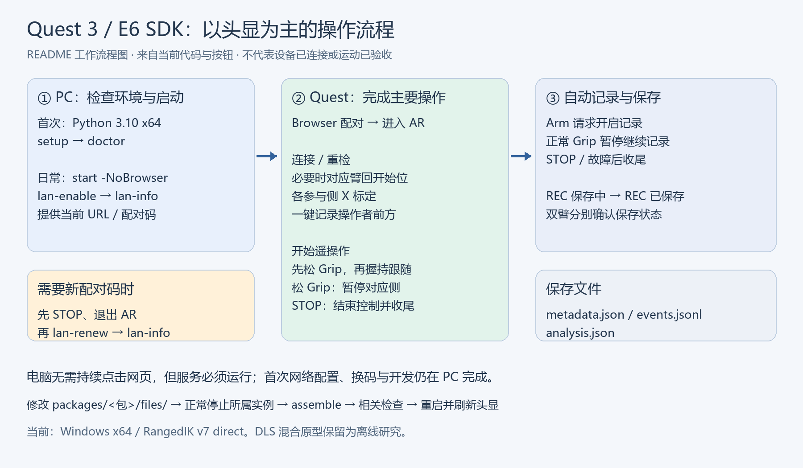

Windows x64 v0.2.0 · 下载 SDK · 完整环境安装命令 · 01–06 终端示例。下文源码路径对应发行 ZIP。
Quest 3 / DOBOT E6 Teleoperation SDK
面向代码阅读、修改和实验复现的 Quest 3 单臂／双臂遥操作 SDK。前端、连接、通信、标定、逆运动学、执行控制和记录代码均按链路分包，使用同一个启动入口。
日常操作以 Quest 3 为主：电脑启动服务并提供地址／配对码 → 头显连接／重检 → 回位与标定 → 开始遥操作 → STOP → 自动保存数据。 电脑端不需要持续点击网页，也不需要逐个运行算法文件；电脑服务必须一直运行。首次网卡／证书配置、更新配对码、查看数据和开发仍在电脑完成。
当前运行平台：Windows x64，参考 Python 3.10.11。VS Code 是可选编辑器，不包含运行此 SDK 所需的 Python 环境。当前原生库是 Windows DLL；macOS 尚未完成完整适配与验证。
当前在线算法为 RangedIK v7 direct。传统 DLS、旧 QP 和 RangedIK＋受约束 DLS 离线研究均保留，但不因源码存在而自动参与当前在线控制。此项目不是 Meta、DOBOT 或 Galbot 官方 SDK。

导航
- 1. 第一次运行：检查环境与启动
- 2. 检查 E6 和 Quest 连接
- 3. 查看／刷新给 Quest 的配对码
- 4. 在 Quest 中回位、标定和遥操作
- 5. 数据怎样开始记录、保存和读取
- 6. 每次使用的简短流程
- 7. 理解代码链路与修改参数
- 8. 常见问题与验证范围
- 9. GitHub 发布边界
先分清三种状态
| 状态 | 能证明什么 | 不能证明什么 |
|---|---|---|
doctor 通过 |
当前解释器、依赖可发现、必要文件、部分哈希／配置结构符合检查 | 不证明设备已经连接 |
| E6 查询／反馈及 Quest 输入有效 | 相应链路正在提供可识别数据 | 不证明运动已经允许或跟随性能合格 |
| 显式开始后 Grip 跟随 | 系统允许满足条件的目标进入控制链 | 实体跟踪质量、停止距离和避碰仍需单独验收 |
没有 E6 和 Quest 也可以完成环境检查、阅读代码、运行隔离软件检查。 未连接设备时应如实显示未连接；本 SDK 不用虚构输入替代真机追踪。
1. 第一次运行：检查环境与启动
1.1 在哪个目录运行？
解压后打开 SDK 根目录。该目录同时包含 sdk.ps1、START_SDK.cmd、packages/ 和 tools/。以下电脑端命令都从这里执行；不要在单个 packages/.../files/ 目录直接启动后端。
Quest_E6_SDK/
├─ README.md 本操作手册
├─ sdk.ps1 统一入口
├─ START_SDK.cmd 首次 setup 后启动服务的快捷入口
├─ packages/ 可编辑源码；每包有说明及文件清单
├─ tools/assemble_sdk.py 将各包组装为运行目录
└─ app/ 自动生成的运行目录
packages/ 是编辑源，app/ 是组装结果。第一次 setup 会在需要时自动组装。不要把这两个位置维护成两套不同的实现。
1.2 先检查 Python
在 SDK 根目录打开 PowerShell：
python --version
python -c "import sys, struct; print(sys.executable); print('bits =', struct.calcsize('P') * 8)"
参考环境是 Python 3.10.11、64 位。python 不存在时，先安装 Python 3.10 x64 并确认当前终端能找到它。安装 VS Code 或其 Python 扩展不能替代这一步。不要把不同 Python 版本的依赖安装结果视为本项目已验证环境。
1.3 安装本项目依赖
powershell -NoProfile -ExecutionPolicy Bypass -File .\sdk.ps1 setup
这一步组装文件、创建 app/.venv/，并按固定依赖清单安装 Python 包，包括 Wi-Fi HTTPS 所需的 cryptography。首次安装需要能访问依赖下载源。它不安装机器人驱动、不修改网卡地址、不自动开放防火墙，也不连接或使能机械臂。
普通运行无需安装 Rust、Visual Studio C++ Build Tools 或 Node.js：RangedIK DLL 和前端模块已经随包提供。只有修改 Rust 并重编原生库时才需要构建工具。
以下示例统一使用 powershell ... -File 写法，只为该进程指定脚本执行策略，不修改系统持久执行策略。
1.4 检查环境
powershell -NoProfile -ExecutionPolicy Bypass -File .\sdk.ps1 doctor
| 输出 | 怎么处理 |
|---|---|
PASS |
对应检查通过；继续下一项 |
FAIL |
先修复该项，不继续进入运动流程 |
WARN usb_adb |
使用本文 Wi-Fi 路线时可暂不安装 ADB |
WARN lan_certificate |
新环境尚未生成证书；按第 2 节配置 |
WARN dependency:cryptography |
虽被离线检查标为可选，本文 Wi-Fi 配证书必须安装；重新检查 setup 结果 |
doctor 不访问机器人，证书检查也仅确认文件存在，不证明其 IP 与当前网卡相符或尚未过期。
首次在另一台电脑运行时，再做第 7.4 节的无设备检查，实际加载 DLL 并执行名义求解。doctor 的 PASS 不包括这一项原生库运行验证。
1.5 启动服务：日常的第一个运行入口
powershell -NoProfile -ExecutionPolicy Bypass -File .\sdk.ps1 start -NoBrowser
启动链为 sdk.ps1 → app/sdk.ps1 → start-rangedik.ps1 → server.py，默认读取 profiles/rangedik_world_anchor.json。-NoBrowser 避免自动打开电脑页面，之后主要用头显操作。
确认电脑本地 API 有响应：
$state = Invoke-RestMethod 'http://127.0.0.1:8765/api/status'
$state | Select-Object project_id, mode
$state.teleop | Select-Object state, armed, participants
预期项目 ID 为 quest3-dual-e6-readonly-20261029（历史兼容名称）；新启动时没有自动参与臂、armed 为 false。启动服务不等于连接机器人或允许运动。
如提示 8765 已占用，先确认是否已有本 SDK／原工程的服务。两个副本不能同时占用该端口；不要直接结束未知进程。
2. 检查 E6 和 Quest 连接
2.1 连接拓扑与配置位置
Quest 3 Browser ── Wi-Fi / HTTPS + WSS :8443 ── Windows PC
├─ 独立以太网链路 ── 左 E6
└─ 独立以太网链路 ── 右 E6
PC 本地管理／诊断：127.0.0.1:8765
E6 命令端口：29999 E6 实测反馈：30004
首次 setup 后，在 SDK 根目录创建仅供本机使用的配置：
.\app\.venv\Scripts\python.exe -X utf8 .\app\device_settings.py --init
打开 app/runtime/devices.local.json。对使用的侧别填写控制器地址 left_e6_ip / right_e6_ip 和 PC 对应以太网口的源地址 left_e6_local_ip / right_e6_local_ip。不用的一侧保留两个 null。两台控制器 IP 相同时，使用两条物理隔离链路和不同的 PC 源地址。先在现场确认网卡、接线、控制器身份与 TCP 控制模式。保存文件后在根目录检查：
.\app\.venv\Scripts\python.exe -X utf8 .\app\device_settings.py --check
公开版初始没有回位目标。连接后在 PC 保存相应机械臂的实测起点，头显才可请求回到这个位置。修改本地网络绑定前应停止该副本的服务。
2.2 E6 首次只读检查：电脑诊断可选，头显重检是主流程
新启动且还没有监视／控制对象占用 E6 连接时，可以在电脑做一次只读检查。只接左臂就选 left，只接右臂就选 right，两台都接好才选 both：
powershell -NoProfile -ExecutionPolicy Bypass -File .\sdk.ps1 check-robot -Side left
检查结果中的 dashboard_tcp、feedback_tcp 分别表示命令／反馈端口连通；protocol_queries_ok 表示四个只读查询成功，errors 给出问题。端口通了但返回 Control Mode Is Not Tcp 时，仍不能认为控制接口已经就绪。
头显的“连接 / 重检”会完成实际参与臂的检测与预检，因此上述电脑诊断不是每次必做。 如果已进入监控或 Prepare，独立 check-robot 可能因连接归属冲突而被拒绝，此时查看现有状态，不要反复打开第二套命令连接：
powershell -NoProfile -ExecutionPolicy Bypass -File .\sdk.ps1 monitor
主动建立只读监控的可选命令是 connect-feedback -Side left/right/both，参数三选一。查看 robots.<side>.connected、valid、feedback_age_ms、receive_hz 和 reason；这些仍不代替最终运动前预检。
2.3 为 Quest 配置电脑的 Wi-Fi 入口
PC 与 Quest 必须处于可以相互访问的网络。相同 Wi-Fi 名称不保证校园／访客网络允许设备间通信。
先列出本机 IPv4 地址和前缀，选择 Quest 能访问到的 PC 无线／局域网地址，不是 E6 专用网卡地址：
Get-NetIPAddress -AddressFamily IPv4 |
Select-Object InterfaceAlias, IPAddress, PrefixLength, AddressState
$questPcIp = Read-Host '输入 Quest 可访问的 PC 本机 IPv4'
$questPrefix = [int](Read-Host '输入该网卡实际 PrefixLength，例如 24 或 16')
powershell -NoProfile -ExecutionPolicy Bypass -File .\sdk.ps1 lan-config -Ip $questPcIp -Prefix $questPrefix
powershell -NoProfile -ExecutionPolicy Bypass -File .\sdk.ps1 lan-enable
powershell -NoProfile -ExecutionPolicy Bypass -File .\sdk.ps1 lan-info
lan-config 在 app/runtime/ 生成该 IP 的七天本地 TLS 证书、私钥与 LAN 配置；lan-enable 开启 8443；lan-info 读取当前 url、pair_code、code_remaining_seconds 等字段。上述 IP／前缀需要来自真实网卡，不要照抄他人的截图。
如果 listener 已启动而 Windows 防火墙阻止 Quest 访问，可在管理员 PowerShell中显式运行 app/2026-10-29-enable-lan-firewall.ps1。它按实际 IP、端口、子网与 Python 程序创建窄范围规则。普通 setup 不执行此步骤；已经可访问时无需重复修改。
2.4 在 Quest 中连接并确认真实输入
- 戴上 Quest，打开头显自己的 Browser。
- 输入
lan-info当前返回的 HTTPS URL。不要在电脑浏览器里输入配对码，把电脑误配成输入设备。 - 首次可能出现本地证书提示；由操作者核对目标确实是自己的 PC 后处理，不全局关闭浏览器证书校验。
- 输入当前六位配对码，进入页面，选择 “进入 AR 遥操作面板”。本项目运动路径要求 AR；页面的
Start VR不代表当前控制器允许用纯 VR 模式跟随。 - 看头显面板的 PC 连接、左右手追踪和 Grip 状态。先不开始遥操作，小幅移动手柄、按下并释放按钮，确认对应侧输入变化。
- 单臂只需该侧有效手柄；双臂需要两侧有效手柄。配对成功但没有进入 AR，不等于已经有可用于控制的输入。
需要电脑辅助确认时，只读运行：
powershell -NoProfile -ExecutionPolicy Bypass -File .\sdk.ps1 quest
看 connected、status、valid.left/right、age_ms 以及真实帧中的 tracking_valid、emulated_position、visibility。没有设备时出现未连接／失效就是正确结果。
3. 查看／刷新给 Quest 的配对码
查看当前码用 lan-info，生成新码用 lan-renew。刷新网页或再次执行 lan-enable 不等于刷新配对码。
只查看当前地址与码
powershell -NoProfile -ExecutionPolicy Bypass -File .\sdk.ps1 lan-info
需要换新码、旧码过期或误配电脑时
- 如果控制正在进行，先在头显点击 STOP 双臂，确认停止；有记录时等它完成保存。
- 在头显点 退出 AR，或页面的 End input session。只松开 Grip 不会结束输入会话。
- 等待 WebSocket 断开；必要时在 PC 检查
quest.connected已为 false。 - 执行下面两条命令，将新的码输入头显重新配对：
powershell -NoProfile -ExecutionPolicy Bypass -File .\sdk.ps1 lan-renew
powershell -NoProfile -ExecutionPolicy Bypass -File .\sdk.ps1 lan-info
lan-renew 会更新服务端配对令牌并使旧 cookie 失效。若当前输入会话仍连接，接口返回 HTTP 409，要求先结束 XR 输入；不要用反复重启服务代替这个步骤。
配对码的输入有效期为 1 小时；它不是“遥操作每小时强制断开”。正常会话不需要频繁换码。服务重启后要重新启用 LAN 并读取新码。若 PC IP 改了或证书过期，应先正常停止／关闭所属服务，再按新 IP 配证书、启动并启用 LAN；单纯换配对码不能修复地址／证书不匹配。
4. 在 Quest 中回位、标定和遥操作
4.1 先认识两种按钮
- 食指 Trigger／扳机：射线指向面板按钮后点击。
- 中指 Grip／握持键：离合（Clutch）式跟随许可。按住才允许该臂跟随，松开暂停；它不是面板点击键，也不是保存按钮。
面板偏离视线时可点 面板居中 或按下右摇杆。AR 中模型与坐标轴用于观察运动学状态，不能把它当成已经与真实机械臂精确空间配准。
4.2 连接／重检参与臂
松开 Grip，点击 连接 / 重检。后端检测已连接臂，并为每侧完成真实反馈、上下文、控制接口和运动学模型检查；成功后才成为本次参与集合。
| 设备情况 | 当前行为 |
|---|---|
| 只接好左臂或右臂 | 识别为该侧单臂，要求对应侧手柄／标定 |
| 两台均在线 | 按双臂组准备；两侧都满足条件后才统一允许控制 |
| 一侧在线但预检失败 | 显示失败，不能把“端口在线”当作该侧可运动 |
“选择/标定”里的 左臂/左手、右臂/右手 用来选择标定对象，不是运行期间切换正在参与的控制组。连接代次或坐标上下文改变导致预检过期时，先按状态提示停止，再重新重检。
4.3 必要时回开始位
首次启动跟随要求工具轴接近朝下，当前初始阈值为 5°。不满足时，可使用头显里的 左臂回开始位／右臂回开始位。
回位不要求先完成方向标定，但必须有该侧有效连接、身份与已核对的起点配置。按需执行一次对应侧回位，保持 AR 可见并松开该侧 Grip；等待实测到位，必要时再重检。
回位会实际移动机械臂。 当前实现的显式回位请求可能先清除该臂一次符合条件的碰撞保护，再按需使能并执行 MovJ 回位；它不会无条件清除其它报警。换设备前应重新核对身份、工具和工区并保存该设备自己的实测起点。保护清除或软件到位状态不能证明原来的物理问题已经解决。
4.4 标定：只采基座 X，再记录共享操作者前方
点击 选择/标定，按下面顺序对本次参与侧操作：
- 选 左臂/左手 或 右臂/右手，保持该侧追踪有效并松开 Grip。
- 在舒适位置点击 1 开始记录X。
- 沿所选机械臂基座 +X 水平方向平移对应手柄至少 80 mm，无需回起点，也不移动机械臂。
- 点击 2 完成X标定 · 自动应用。当前流程不采 +Y、不再单独点击 Apply。
- 双臂时切到另一侧，重复上述 X 标定。
- 用选定的真实手柄射线指向操作者正前方，点击 一键记录操作者前方。这是两侧共用的一次前方记录。
确认参与侧都显示标定当前有效、共享前方已记录。这里标定的是方向映射：假设机械臂基座水平，固定重力竖直，只确定水平航向；不是 AR 模型与实物的位置注册。
退出／重建 XR 会话、参考空间重置或相关机器人坐标上下文变化后，标定可能失效。不要把旧矩阵强行复用为当前有效标定。
4.5 开始与 Grip 跟随
- 保持参与侧手柄追踪有效、AR 可见，所有参与侧 Grip 完全释放。
- 点击 开始遥操作。Arm（允许控制）会做最后的上下文与初始姿态检查，可能使能机器人并确认静止；成功后不是立即回放旧手柄运动。
- 按面板提示先释放 Grip，再握持相应侧 Grip，以小幅动作开始。左手控制左臂，右手控制右臂。
- 当前默认在本次握持起点上，以固定标定方向保持 1:1 的位置和旋转目标，之后受工具朝下锥、求解与下发检查约束。手停时机器人仍可能追赶尚未达到的目标。
- 松开某侧 Grip，会停止／暂停该侧跟随；正常情况下另一侧仍可继续。重新握持时从新的手柄位置和机器人实测位置取锚点，不重放松手期间的位移。
当前代码没有把 RangedIK 的软平滑权重当硬性速度限制，也没有已经验证的双臂相互避碰。此处描述实现行为，不构成实体运动性能保证。
4.6 结束一次操作
- 松开 Grip，点击 STOP 双臂。即使当前只参与一臂，该按钮也通过组停止路径处理现有控制对象。
- 等待停止反馈确认；如果仍是 FAULT／停止未确认，按故障原因处理，不能只凭按钮点击或命令 ACK 判断已停稳。
- 等 REC 保存中 → REC 已保存，再退出 AR。双臂严格归档时按第 5 节分别确认两侧记录状态。
- 本次不再使用服务时，在所属 SDK 根目录执行：
powershell -NoProfile -ExecutionPolicy Bypass -File .\sdk.ps1 shutdown
窗口失焦、追踪丢失、网络恢复不会自动授权继续运动；按面板提示重检／重新开始。停止回执 ACK（Acknowledgement）与新鲜实测静止反馈是两种证据，项目保留这一区分。
5. 数据怎样开始记录、保存和读取
5.1 正常操作不需要电脑点击“录制”
点击头显 开始遥操作时，显式 Arm 请求会为本次参与臂开启记录；即使 Arm 后来被拒绝，也会保留这次尝试和原因。因此“有一个记录目录”不等于这次运动成功。
松开 Grip 的正常暂停不会自动把记录切成新文件；一次 Arm 可以包含多次握持。STOP／退出控制或故障后，记录器保留收尾信息，约 1 秒后进入结束流程，写线程排空队列后才报告保存完成。应看状态，不按固定秒数假定已写完。
补充情况：无活动记录时显式 STOP 也可生成停止诊断记录；capture-diagnostic 可显式保存短时只读诊断。单纯启动服务／Prepare 不等于已经开启常规遥操作文件记录。
5.2 保存到哪里？
默认目录由代码使用 Windows 用户目录构造：
%USERPROFILE%/Documents/E6_Teleop_Recordings/
├─ YYYY-MM-DD-HH-MM-SS-left/
│ ├─ metadata.json
│ ├─ events.jsonl
│ └─ analysis.json
└─ YYYY-MM-DD-HH-MM-SS-right/
├─ metadata.json
├─ events.jsonl
└─ analysis.json
单臂只为本次参与侧开启正常记录；双臂分目录保存。同秒重名会增加版本后缀，不覆盖旧记录。这是程序构造的路径，不应直接假设它等于 OneDrive 重定向后的“文档”；以状态里的 directory 为准。
5.3 每个文件有什么？
| 文件 | 内容与用途 |
|---|---|
metadata.json |
侧别、开始时间、数据单位、启动记录时的磁盘源码哈希、采样／写入策略 |
events.jsonl |
一行一个 JSON 事件：收到的 Quest 帧、机器人实测反馈、原始／候选／发送目标、控制状态、命令回执和异常、标定与停止证据等 |
analysis.json |
收尾后从已保存事件生成的统计、末次目标／实测对比、失败／停止记录与丢样数；不是任务成功证书 |
Quest 帧在后端接受时记录；已有机器人反馈／控制状态最多约 20 Hz 采样。程序使用有限内存缓冲、有限写队列与批量刷新，保留最多约 5 秒的可用前文记录；缺失数据不补造。单位是：手柄位置 m、机器人位置 mm、关节／机器人欧拉角 deg、四元数 xyzw。
当前没有自动录制 Quest 相机视频／RGB-D，也没有直接导出 LeRobot 或其它训练数据集格式。若用于后续 VLA／学习任务，还需要按实际传感器、时间同步与数据格式做单独转换。
5.4 怎样确认确实保存成功？
头显的 REC 状态便于日常观察；双臂完整归档应检查每个本次参与臂：
$recording = (Invoke-RestMethod 'http://127.0.0.1:8765/api/status').recording
$recording.arms.left | Select-Object state, directory, dropped_records, writer_error
$recording.arms.right | Select-Object state, directory, dropped_records, writer_error
成功保存的检查条件是：该次参与侧 state = SAVED、writer_error 为空；dropped_records = 0 表示写队列未报告丢样。未参与侧的 READY 不算失败。若有丢样或写入错误，保留原始状态和数据，不能把这次记录标成完整无损。
查看实际目录可使用文件资源管理器，或：
Get-ChildItem -LiteralPath (Join-Path $env:USERPROFILE 'Documents\E6_Teleop_Recordings') -Directory |
Sort-Object LastWriteTime -Descending |
Select-Object -First 6 Name, LastWriteTime
5.5 要改保存位置或记录字段，改哪里？
- 默认根目录与记录器装配：server.py (
packages/02_backend/files/server.py) 中recordings_root／E6_Teleop_Recordings。当前 CLI 没有自定义--record-dir参数，不要使用不存在的选项。 - 记录策略、字段、缓冲与收尾：teleop_recording.py (
packages/09_features/files/teleop_recording.py)。 - 现有服务可显式保存只读诊断：
sdk.ps1 capture-diagnostic，随后查询 recording 状态；不需要 Arm。 - 修改字段或采样时保留时间、单位、来源、丢样与错误信息，避免在控制循环中同步大量写盘。
6. 每次使用的简短流程
完成首次环境、网卡、起点与证书配置后，且 IP／证书仍有效：
电脑，仅启动与提供入口：
powershell -NoProfile -ExecutionPolicy Bypass -File .\sdk.ps1 start -NoBrowser
powershell -NoProfile -ExecutionPolicy Bypass -File .\sdk.ps1 lan-enable
powershell -NoProfile -ExecutionPolicy Bypass -File .\sdk.ps1 lan-info
Quest，完成主要操作：
打开当前 URL／配对
→ 进入 AR 遥操作面板
→ 连接 / 重检
→ 必要时对应侧回开始位，实测到位后重检
→ 所参与侧分别完成 X 标定 + 共享操作者前方
→ 开始遥操作
→ 松 Grip 后重新握持，进行遥操作
→ STOP 双臂，确认停止与记录保存
→ 退出 AR
换码是第 3 节的独立维护操作，不插在每次 Grip 暂停／继续之间。电脑本地总控页面 http://127.0.0.1:8765/ 和监视页面 /monitor 是可选诊断入口；正常头显流程不依赖操作者持续点击它们。
7. 理解代码链路与修改参数
7.1 输入到机器人发生了什么？
01 前端：真实手柄位置／朝向／Grip
→ 02 后端：HTTPS/WSS、会话、帧校验
→ 03 映射：方向标定 + 本次握持锚点 → 目标末端位姿
→ 05 RangedIK：目标、实测关节种子、任务范围 → 候选关节角
→ 07 控制：状态／队列／反馈／姿态检查 → ServoJ
→ 08 E6：协议回执 + 后续实测反馈
→ 09 记录：保留输入、目标、候选、命令、反馈和失败原因
末端控制点（Tool Center Point，TCP）是控制器表达末端位置与姿态的参考点；它与前文“TCP 远程控制模式／网络协议”不是同一个概念。逆运动学（Inverse Kinematics，IK）把末端目标转换成候选关节角，正运动学（Forward Kinematics，FK）将关节角算回末端用于核验。
程序只通过统一服务启动。映射、IK、ServoJ 等模块由服务调用，不需要分别运行一组 Python 终端。LeftZTrial 是保留的历史类名；当前左右臂分别使用它的独立实例，不是只有左臂能用。
7.2 修改入口
| 要修改的内容 | 优先看这些文件 |
|---|---|
| VR 按钮／HUD、手柄读取 | quest_hud.mjs (packages/01_frontend/files/web/quest_hud.mjs)、quest.js (packages/01_frontend/files/web/quest.js) |
| PC 页面 | pc_monitor.mjs (packages/01_frontend/files/web/pc_monitor.mjs) 及对应 HTML/CSS |
| 新功能接口／会话流程 | server.py (packages/02_backend/files/server.py)、headset_bridge.py (packages/02_backend/files/headset_bridge.py)、SDK client.py (packages/10_sdk_runtime/files/quest_e6_sdk/client.py) |
| 方向标定、映射、Grip 锚点 | direction_calibration.py (packages/03_pose_mapping/files/direction_calibration.py)、operator_frame.py (packages/03_pose_mapping/files/operator_frame.py)、relative_pose.py (packages/03_pose_mapping/files/relative_pose.py) |
| RangedIK 容差／权重 | rangedik_world_anchor.json (packages/05_ranged_ik/files/profiles/rangedik_world_anchor.json) |
| RangedIK 多初值与候选选择 | ranged_ik_adapter.py (packages/05_ranged_ik/files/ranged_ik_adapter.py)、ranged_ik_backend.py (packages/05_ranged_ik/files/ranged_ik_backend.py) |
| 传统 DLS | controller_kinematics.py (packages/04_kinematics_dls/files/controller_kinematics.py) 的 PoseModel.solve() |
| 离线混合 DLS | controllers.py (packages/11_offline_algorithms/files/experiments/ranged_dls/controllers.py) 的 Settings／ConstrainedDLS |
| 单臂执行、双臂协调、停止 | left_z_trial.py (packages/07_motion_control/files/left_z_trial.py)、teleop_group.py (packages/07_motion_control/files/teleop_group.py) |
| 命令传输／反馈解析 | dobot_safe_sdk.py (packages/08_robot_io/files/dobot_safe_sdk.py)、e6_feedback.py (packages/08_robot_io/files/e6_feedback.py) |
| 回位／数据记录 | start_positions.py (packages/09_features/files/start_positions.py)、teleop_recording.py (packages/09_features/files/teleop_recording.py) |
当前 RangedIK 主要参数：位置分量范围 [1,1,1] mm，整体旋转角范围 2°，主搜索半径每关节 ±60°；objective_weights 控制优化偏好。velocity／acceleration／jerk 权重是软代价，不是硬性限速；搜索范围也不是实际命令跨度或关节绝对限位。
阻尼最小二乘法（Damped Least Squares，DLS）通过阻尼改善局部数值求解；传统实现的阻尼候选、误差容差和迭代步长在 controller_kinematics.py，离线混合实现的参数在 controllers.py:Settings。两者不要混为同一个控制器。
当前在线链是 RangedIK direct，不串接 DLS 或旧 QP。 包 06 保留旧关节参考 QP；包 11 的 RangedIK＋受约束 DLS 原型仍有历史位置／实时性失败结论。修改包 11 的阻尼不会自动改变在线遥操作。
7.3 改完后怎么生效？
- 若正在运行，先从所属实例正常 STOP、等待记录保存并 shutdown。
- 修改
packages/<包名>/files/中的正式源码／配置。 - 在根目录执行
sdk.ps1 assemble，然后sdk.ps1 doctor。 - 执行与本次改动直接相关的离线检查；再启动并刷新 Quest 页面。
app/ 是生成结果，组装器发现手工修改的生成文件会拒绝覆盖。初始文件哈希用于追溯；组装状态记录实际组装内容。不要为了改参数直接绕过状态机发送原始机器人命令。
纯 Python／JSON 修改不要求重编 DLL。修改 Rust 时按 算法与构建说明 (CODE_TOUR.md) 更新补丁／桥接、重编并更新 manifest。vendor/rangedik-source-snapshot/ 是源码快照；单改快照不改变当前 DLL。
详细顺序导读见 CODE_TOUR.md，各包职责见 SDK_CODE_MAP.md (CODE_TOUR.md)。
7.4 无设备时运行什么？
环境准备好后，可从根目录运行隔离验证：
.\app\.venv\Scripts\python.exe -X utf8 .\app\tools\verify_sdk_delivery.py
它加载随包 DLL，在公开 URDF 的名义模型上求解并检查隔离的本地网页资源。在 app/ 可运行 .\.venv\Scripts\python.exe -X utf8 -m unittest discover -s tests -p 'test_*.py' 做随包单元检查。
离线研究另装 requirements-offline.txt 并提供自己的模型和录制，参数见发行包根目录的 OFFLINE.md。
8. 常见问题与验证范围
| 现象 | 首先检查 |
|---|---|
python 找不到／setup 失败 |
解释器路径、3.10 x64、依赖下载源；不要随意升级全部依赖掩盖问题 |
| DLL 缺失／哈希不符 | 是否完整解压、组装；DLL 与 build-manifest 是否配套 |
| 8765 被占用 | 是否原工程／另一副本还在运行，先核对进程归属 |
| Quest 打不开 URL | PC 当前 IP、实际网络互访、证书、8443 listener、窄防火墙规则 |
| 配对码不接受 | 当前 lan-info、到期时间；连续输错有频率限制，等待后再试 |
lan-renew 返回 409 |
先 STOP、结束 AR 输入，等 quest.connected=false |
| 配对成功但无输入 | 必须在头显 Browser 进入 AR，检查可见性／真实控制器追踪 |
| E6 端口通但不能准备 | 控制模式、源地址与实物身份、报警、反馈时效／上下文 |
| 标定按钮不可用 | 未停止、预检过期、对应侧追踪无效或 Grip 未释放 |
| X 标定后仍不能开始 | 是否记录共享前方、初始姿态是否满足、双臂是否两侧均就绪 |
| 松 Grip 后 REC 还在记录 | 正常暂停不结束本次 Arm 记录；STOP／结束控制后收尾 |
| REC 有错误／缺样 | 查看各侧 writer_error、dropped_records 与实际保存目录 |
| 修改文件没有生效 | 是否改了 packages、完成 assemble、重启所属实例并刷新头显 |
已有软件证据包括 Windows 上的独立环境安装、SDK／组装检查、离线原生库与数学接口检查、隔离 HTTP/前端资源检查；本版证据见发行说明。
真实双臂曾产生运动并出现保护／停止事件；这不是稳定性通过证据。已有抖动根因、实体停止距离、相互避碰和完整任务成功率仍未解决／验收。历史日志、离线原型、模型参考和真机实测始终分开。macOS 与另一台干净电脑未因本机检查而自动获得兼容性保证。
9. GitHub 发布边界
公开 SDK 从 v0.2.0 Release 获取。下载带有 windows-x64 的具名 ZIP 并解压，按环境安装启动，再按01–06 示例运行。
代码许可证：MIT。第三方模型、库、工具和原生源码保留原许可与归属，见 THIRD_PARTY_NOTICES.md (packages/10_sdk_runtime/files/THIRD_PARTY_NOTICES.md)。不要发布本机 TLS 私钥、会话码／cookie、用户采集记录或声称这些实验代码已经取得官方机器人安全认证。